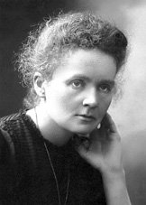

Marie Curie


Trong tất cả những phụ nữ ảnh hưởng đến lịch sử thế giới, tuyệt đối không thể thiếu tên của phu nhân Curie. Bà là nhà nghiên cứu vĩ đại trong lịch sử khoa học thế giới. Bà cũng chồng là Pierre-Curie phát hiện ra nguyên tố có tính phóng xạ. Đó là nguyên tế Radium. Loại nguyên tố thiên nhiên hiếm có này không cần sự tác động của ngoại vật, vẫn có thể tự phát sáng, phát nhiệt, và có năng lượng rất lớn. Phát hiện này, không những giúp chữa trị bệnh ung thư theo phương pháp mới, mà còn sinh ra ngành khoa học mới. Ngoài ra, còn lật đổ những học thuyết cơ bản về vật lý học đương thời. “Do có sự cống hiến to lớn trong khoa học, bà trở thành nhà khoa học vĩ đại vang danh với hai lần nhận được giải Nobel, trở thành Nữ Giáo sư đáng tin cậy nhất ở Học viện Ðại học Paris, một học viện cao cấp nổi tiếng thế giới, là Nữ Viện sĩ thứ nhất của Viện khoa học nước Pháp. Trong cả cuộc đời, bà nhận được 26 giải thưởng và huy chương của 7 quốc gia trên thế giới, đảm nhận 107 chức vụ vinh dự của 25 quốc gia, được mọi người ca tụng là “Người mẹ của nguyên tố Radium”.
Phu nhân Curie từng nói: “Trong khoa học, chúng ta nên chú trọng sự việc, không nên quá chú trọng con người”. Nhưng vào thời đại nguyên tử của thế kỷ 20, “Người mẹ của nguyên tố Radium” là người rất đáng cho người đời chú ý. Chỉ thông qua cuộc đời của người phụ nữ vĩ đại này, mới có thể hiểu được sự phát hiện vĩ đại của bà có cống hiến to lớn đối với lịch sử y học thế giới.
Nữ học sinh nghèo khó đến từ nước khác
Một đêm khuya cuối tháng 10 năm 1891, trước toa tàu hạng tư của đoàn tàu chạy từ Warsaw đến Paris, một cô gái trẻ mặc áo khoác rộng, mang một túi nặng đựng sách, thức ăn, kẹo, chăn bông và chiếc ghế xếp đang chuẩn bị bước lên tàu.
Cô gái có sắc mặt tươi đẹp, ánh mắt màu xám sáng lạ thường. Cô quay lại ôm chặt người cha già yếu, nói trong tiếng khóc: “Con không đi xa lâu đâu, hai năm, nhiều nhất là ba năm! Con học xong chương trình, lập tức sẽ quay về, chúng ta sẽ lại sống chung, chúng ta nhất định sẽ vĩnh viễn không bao giờ lìa xa... có phải không?” Người cha cố đè nén tình cảm nói: “Ðúng vậy, con chim nhỏ bé của cha, mau chóng quay về nhé. Hãy cố gắng làm tốt công tác, chúc con may mắn!” Sau khi cha con chia tay, người con gái lại chia tay với anh cả và chị gái, thiết tha mong họ quan tâm chăm sóc người cha đáng kính, do mẹ sớm qua đời, người cha bị áp lực gia đình đè nặng tiều tụy, sớm mất đi niềm vui.
Tiếng còi tàu vang lên trong màn đêm, đoàn tàu bắt đầu hành trình hướng về Paris, cô ấy nằm cong queo trên chiếc ghế xếp. Cô thưởng thức niềm vui được đến Paris học, lặng yên nghĩ về cuộc lữ hành mà cô đã mơ ước từ lâu. Ðây là sự lựa chọn giữa bóng tối và ánh sáng, sự lựa chọn giữa cuộc sống nhỏ bé và vĩ đại.
Người con gái trẻ tuổi ấy, tên Marie-Scrodofusk, năm nay 24 tuổi. Năm 16 tuổi, cô đã tốt nghiệp trường Nữ trung học Warsaw với thành tích xuất sắc, đoạt được huy chương vàng. Lúc ấy Ba Lan bị ba nước Nga, Phổ, Áo chia cắt, nên người con gái Ba Lan không thể vào đại học. So với Bronia - người chị gái lớn hơn Marie ba tuổi, sau khi tốt nghiệp trung học, tuy đã nỗ lực cố gắng đi làm mấy năm, do gia cảnh nghèo khó, không có cách nào ra nước ngoài để học. Marie cùng chị bàn bạc, cô sẽ làm gia sư để dành một ít tiền, cùng tiền của cha giúp chị đến Paris học ngành y, sau khi chị tốt nghiệp, lại giúp cho cô đến Paris học. Cứ thế, Marie cố gắng ở quê nhà làm gia sư năm năm, giúp đỡ chị gái hoàn thành việc học, đồng thời để dành một ít tiền cho việc học của mình. Nay có theo lời đến Paris nương nhà chị, chuẩn bị vào học tại Viện Vật Lý học Đại học Paris.
Ðại học Paris là một trường nổi tiếng ở châu Âu, nơi đó có khá nhiều giáo sư và nhà khoa học nổi tiếng. Học kỳ thứ nhất ở Vật lý học Ðại học Paris, khai giảng vào ngày 3 tháng 11 năm 1891 tại đường Soulben. Người nữ học sinh Ba Lan nghèo khó này, bước vào tòa nhà tri thức ở Viện Vật lý học, giống như ruộng lúa bị hạn đã lâu nay gặp được mưa rào. Cô học tập tri thức như đói khát. Đến lớp chăm chú nghe giáo sư giảng bài, sau giờ học không làm thí nghiệm, thì đến thư viện đọc sách hoặc học tiếng Pháp, buổi tối thường ở chỗ trọ hoặc thư viện học bài đến khuya. Cô nhanh chóng trở thành học sinh ưu tú được cả lớp chủ ý.
Khi nói đến những học sinh có thành tích học tập xuất sắc, các nhà khoa học nổi tiếng luôn cho rằng họ có trí tuệ thiên tài, có năng lực và bản chất ham học hỏi. Marie là người có đầy đủ tố chất như thế. Có hai câu chuyện nhỏ trong truyền thuyết, đã phản ánh được bản chất thiên tài của bà.
Câu chuyện thứ nhất: khi Marie và chị Bronia chưa đến tuổi đi học, cha mẹ dạy chị em họ nhận mặt chữ. Chị Bronia thường cố gắng nhớ bằng cách dùng bìa cứng cắt thành mẫu tự, còn Marie lại đem những bìa cứng này vất lung tung. Một hôm, vào sáng sớm, cha của bà đem một chương trong quyển sách tranh chữ đưa cho Bronia đọc, Bronia cố gắng hết sức mới đọc được suôn sẻ. Marie vốn không kiên nhẫn, lại lười biếng, nhưng nay bất ngờ bà đem cả quyển ra đọc câu mở đầu rồi ngưng. Mọi người ở đó giương mắt nhìn. Marie đắc ý tiếp tục đọc thuộc hết quyển sách. Bỗng nhiên có bật khóc nức nở, cảm thấy mình quá vô lễ với chị, bèn xin lỗi: “Con không cố ý, chỉ vì cái này dễ quá…”
Câu chuyện thứ hai: sau khi họ đi học, Marie thường làm xong bài trước những đứa trẻ khác, sau đó chuẩn bị bài mới, hoặc giúp đỡ những bạn học kém giải quyết những vấn đề khó. Một buổi chiểu, khi những đứa trẻ ở trong phòng ăn đang ôn bài, chúng ồn ào lớn tiếng, Marie chống hai khuỷu tay lên bàn, các ngón tay bịt tai lại để ngăn tiếng ồn, chăm chú đọc sách. Cách đọc sách chăm chú, tâm không xao động của cô, khiến cho những đứa trẻ khác cảm thấy khó chịu. Chị họ Henette, chị cả Bronia, chị hai Haila của cô thích chơi khăm, quyết định đùa với Marie.
Ba cô gái đem những cái ghế sắp xếp xung quanh Marie, một cái ghế dựa để trên đầu, sau đó nhẹ nhàng bỏ đi, đợi xem chuyện gì sẽ xảy ra. Do Marie đọc sách quá chăm chú, nên không hề hay biết. Qua nửa giờ đổng hồ, khi cô đọc xong một chương, xếp sách lại ngẩng đầu lên, những cái ghế bất ngờ ầm ầm ngã xuống, đập vào vai trái của MARIE. Cô xoa, xoa chỗ đau, rồi cầm lấy sách, chỉ nói với các chị của mình ba chữ “thật vô vị” rồi ra khỏi phòng ăn, đến bức tường trong phòng tiếp tục ngồi đọc sách.
Bây giờ cô đã hoàn toàn chín chắn. Cô xa lìa Tổ quốc bị Sa Hoàng nước Nga xâm lược giày xéo, một mình đến nước khác để học. “Mục đích học tập của cô càng rõ ràng, cô muốn dùng những trí thức học được của mình để cứu nước, thực hiện mơ ước của cha ông đã hy sinh xương máu cho độc lập của Tổ Quốc. Marie không bao giờ quên năm cô lên 10 khi cô đang theo học trường tư ở Ba Lan đã gặp một màn kịch nhục nhã. Lúc ấy những đứa trẻ Ba Lan đi học, không được nói tiếng Ba Lan, không được dạy chữ Ba Lan, mà phải nói tiếng Nga, học lịch sử nước Nga, và biết lễ nghi nước Nga. Một hôm, tên thị sát người Nga bỗng nhiên đến lớp của Marie, kiểm tra tình hình học tập. Khi hắn muốn thầy giáo gọi một học sinh đứng lên trả lời câu hỏi, thẩy giáo không đắn đo gọi Marie. Vì cô là học sinh nói tiếng Nga giỏi nhất, các phương diện tri thức tương đối biết nhiều, rất được thầy giáo yêu mến. Viên thị sát người Nga trước tiên muốn Marie đọc thuộc lòng bài kinh cầu nguyện Thiên Chúa giáo, tiếp theo lại muốn Cô bắt đầu từ Catherine II, nói tên của Hoàng đế thống trị dân tộc Nga, còn muốn cô nói tên và tôn hiệu của Hoàng tộc nước Nga. “Nữ hoàng Bệ hạ, Ðiện hạ Thái tử Alexander, Ðiện hạ Ðại công..." Câu trả lời của Marie rất chính xác, phát âm chuẩn giống như cô sinh ra tại Peterple. Viên thị sát mỉm cười vừa ý. “Ai thống trị chúng bây?” Viên thị sát đột nhiên lại hỏi. Ánh mắt của thầy giáo và các học sinh đều ánh lên ngọn lửa phẫn nộ, trong phòng im lặng đáng sợ. Vì không ai trả lời, nên viên thị sát nổi giận, lớn tiếng hỏi lại một lần nữa: “Ai thống trị chúng bây?” Marie trả lời một cách đau khổ “Hoàng đế Alexander II, Hoàng đế của toàn nước Nga”. Sắc mặt cô trở nên tái nhợt, những giọt nước mắt lăn dài trên má. Sau khi viên thanh tra rời khỏi phòng học, thầy giáo chẳng nói gì đi đến trước mặt Marie, nhẹ nhàng hôn lên trán cô. Marie cũng không thể kiềm chế được, bật khóc nức nở. Từ đó Marie bé nhỏ nảy sinh tư tưởng phản kháng lại sự thống trị của nước Nga. Khi cô nghe được Sa hoàng Alexander II bị ám sát, rất kích động nhảy lên bàn học biểu lộ sự vui mừng. Mỗi lẫn cô đi ngang qua Quảng trường đặt bia kỷ niệm những tên tay sai của nước Nga, cô nhổ nước bọt, biểu lộ sự khinh miệt. Một hôm, khi nghe tin anh trai của cô bạn gái, vì hoạtđộng cách mạng, nên hôm sau sẽ bị Sa hoàng treo cổ, cô và hai chị đến nhà người bạn ở lại suốt đêm, để cầu nguyện cho nhà cách mạng, thề sẽ báo thù cho anh ấy.
Tại Paris, Marie dốc sức học tập, không tham gia tụ họp bạn bè, không tiếp xúc với người Mác, tự qui định cho mình một mới khóa biểu. Lúc đầu cô ở nhà chị gái, về sau thuê một căn gác xép nhỏ. Mùa hạ nóng nực, mùa đông lạnh giá. Ðêm tối mùa đông giá rét, nước trong phòng đề đóng hàng, quẩn áo chăn mền quá mỏng manh, có khi cả người cô rét run cầm cập, không ngủ được, đành phải đem tất cả quần áo có được, mặc hết vào người, ngoài cái chăn đang đắp ra, còn đem cái ghế dựa duy nhất trong phòng đè lên quần áo, tạo nên cảm giác ấm áp. Ðể học được nhiều tri thức, buổi tổi thường đến thư viện đọc sách đến khi thư viện đóng cửa mới về. Sau khi về nhà lại đốt một ngọn đèn dầu nhỏ, học đến 2, 3 giờ sáng mới ngủ.
Marue cùng những học Sinh Ba Lan nghèo khổ, chi phí sinh hoạt hàng tháng chỉ 40 rúp, không chỉ chi cho các loại tiền quần áo, ăn ở, sách vở, giấy mực, mà nòn phải đóng tiền học phí. Ðể duy trì cuộc sống, cô chỉ ăn một ít bánh mì khô phết bơ. Do học tập quá khắc khổ, nghỉ ngơi ít, dinh dưỡng kém, Marie mắc chứng bệnh thiếu máu, mấy lần bị ngất, mà không nói với ai. Một hôm, cô ngất xỉu ở trước mặt các bạn học, các bạn lo lắng báo tin cho anh rể cô. Khi anh rể cô đến nơi, cô đã tỉnh lại, và đang chuẩn bị bài vở cho ngày hôm sau. Anh rể cô kiểm tra sức khỏe cho cô, nhìn thấy mấy cái đĩa sạch trơn và mấy cái nồi trống rỗng, hoàn toàn hiểu ra! Anh rể bắt đầu dò hỏi cô: “Em hôm nay đã ăn món gì rồi?” “Hôm nay? Em vừa ăn xong bữa trưa...” “Thế em đã ăn sạch hết à?” Lúc này, Marie không thể không nói thật: Từ tối hôm trước, cô chỉ ăn một củ cải nhỏ và nửa cân quả anh đào, và chỉ ngủ 4 giở. Anh rể cô sau khi nghe, vừa tức giận vừa đau xót, buộc Marie đến nhà anh nghỉ ngơi vài hôm, bồi bổ thêm chút dinh dưỡng. Sau khi Marie hồi phục sức khỏe, lại tiếp tục cuộc sống gian khổ như xưa, ra sức học tập.
Đầu óc Marie rất chuẩn xác. Cô dựa vào ý chỉ sắt đá, quyết tâm đạt đến mỗi mục tiêu được xác định một cách hệ thống: năm 1893, đạt được học vị Thạc Sĩ Vật lý học; năm 1894, lại nhận được học vị Thạc sĩ Toán học.
Từ tình bạn đến tình yêu
Marie sau khi tốt nghiệp, muốn quay trở về Ba Lan để phục Vụ cho Tổ quốc. Lúc này, đầu năm 1894, cô nhận được sự ủy thác của Hội Xúc tiến Thí nghiệm Quốc gia nước Pháp, nghiên cứu đặc tính của các loại sắt thép. Lúc đầu, cô tiến hành nghiên cứu tại phòng thí nghiệm của một giáo sư. Nhưng, thí nghiệm của cô cần phải có một không gian rộng lớn, và trang thiết bị đầy đủ.
Chính lúc này, Covalsci, một vị giáo sư vật lý người Ba Lan, cùng vợ đến nước Pháp hưởng tuần trăng mật; đồng thời đi du lịch khoa học, diễn thuyết, và tham giá cuộc họp của Hội Vật lý học. Do Marie từng quen biết với vợ của vị giáo sư này khi còn ở Ba Lan, nên đến Paris có hẹn gặp Marie. Khi hiểu rõ.khó khăn của cô, Covalsci giới thiệu cô với Pierre-Curie một nhà khoa học có tài. Giáo sư nói với cô: “Anh ấy có thể giúp đỡ và hướng dẫn cô”. Dưới sự sắp xếp của giáo sư này, Marie và Pierre-Curie đã gặp gỡ, qua cuộc nói chuyện lần đầu, hai người đều để lại ấn tượng sâu sắc cho nhau.
Lúc bấy giơ Pierre-Curie 35 tuổi, đang làm giảng viên giáo dục của gia đình, có kiến thức rất rộng về lịch sử và văn học. Dưới sự dạy dỗ của cha là bác sĩ Curie, trình độ toán học được nâng cao rất nhanh, 18 tuổi thi đậu kỳ thi học vị Học Sĩ. Năm 19 tuổi, do hoàn cảnh gia đình khó khăn, Pierre-Curie đến làm việc ở một phòng thí nghiệm, ở đó vừa làm việc vừa học tập. Pierre và anh trai sống rất gấn bó. Họ không những cùng đi đến phòng thì nghiệm, mà còn lợi dụng điều kiện có lợi, bắt đầu nhanh chóng nghiên cứu khoa học. Hai người phát hiện ra một hiện tượng mới - hiệu ứng điện áp. Sau đó, họ phát minh ra một loại dụng cụ đo dòng vi điện, cống hiến to lớn đối với việc nghiên cứu kỹ thuật vô tuyến sau này. Nãm 1883, Jam - người anh trai tìm được một công việc ở miền Trung nước Pháp, hai anh em đành phải chia tay. Pierre từ đó bắt đầu dạy học ở Viện Vật lý học, nhưng vẫn không bỏ công tác nghiên cứu khoa học. Năm 1884 và 1885, ông đưa ra thuyết “nguyên lý đối xứng”. Đây là cuộc cải cách quan trọng đối với việc nghiên cứu hiện tượng vật lý, trở thành cơ sở của khoa học hiện đại. Ông phát minh và chể tạo ra tiểu ly để dùng trong thí nghiệm, và lấy tên ông đặt tên cho nó. Năm 1891, ông tiến hành nghiên cứu các loại từ tính dưới độ nóng cao, cuối cũng đưa ra định luật quan trọng trong vật lý học - định luật Curie.
Pierre-Cutie hăng Say nghiên cứu khoa học, ông quen biết tất cả những nhà khoa học trên thế giới, cuộc sống thì đơn sơ. Tiền lương cả tháng của ông là 300 Franc, chỉ tương đương với lương tháng của một công nhân ưu tú nước Pháp lúc bấy giờ. Ông hay thẹn, kín đáo mà thanh cao, trong cuộc sống và tình cảm tỏ ra hơi vụng về chậm chạp. Ông không thích những cô gái đẹp, mà vẫn chưa gặp được người yêu. Ông đã từng viết trong nhật ký: “… Phụ nữ có thiện tài thì rất ít người”. Nhưng, khi ông và Marie gặp nhau lần đầu, cách nhìn của ông đã thay đổi.
Marie đối với Pierre-Curie cũng có tình cảm. “Khi tôi đi vào, Pierre-Curie đang đứng trước cửa sổ trên sân gác. Tuy anh đã 35 tuổi, nhưng tôi cảm thấy anh còn rất trẻ, đôi mắt sáng trong, thân hình cao to, biểu lộ tình cảm và dáng điệu tự nhiên, khiến tôi chú ý. Anh ấy nói chuyện chậm rãi mà rõ ràng mộc mạc, nụ cười vừa trang nghiêm vừa hoạt bát, khiến người ta tin tưởng. Chúng tôi nói chuyện thân thiện như đã thân quen từ lâu, đề tài chủ yếu là khoa học, tôi đồng ý trưng cầu ý kiến của anh đối với các vấn đề đó”. Cách dùng câu của Marie đơn giản mà thuần khiết, miêu tả tình hình lúc họ gặp nhau lần đầu tiên vào đầu năm 1894.
Từ đó, Marie và Pierre-Curie gặp nhau thường xuyên hơn. Nhà vật lý học trẻ tuổi, tiếp cận với người con gái Ba Lan bằng sự dịu dàng và kiên trì, đem tác phẩm của mình tặng cho cô, đến căn gác nhỏ thăm cô, đưa có đi gặp cha mẹ mình, và cũng có thảo luận các vấn đề khoa học. Mấy tháng sau, sự tôn sùng, hâm mộ và tin tưởng của Pierre-Curie tăng thêm sự thân mật cũng sâu hơn. Pierre-Curie đã trở thành “tù binh" của người con gái Ba Lan thông minh, rất xinh xắn này. Anh phục tùng cô, nghe lời khuyên bảo của cô, tiếp nhận sự thúc giục của cô, viết tác phẩm luận về từ tính, và một bài luận Văn Tiến sĩ cực kỳ vĩ đại. Pierre-Curie chính thức ngỏ lời cầu hôn Marie.
Nhưng Marie lại do dự vì trong thâm tâm, sau khi cô học xong cô sẽ quay về Ba Lan phụng sự đất nước và chăm sóc người cha già yếu. Nếu như cô kết hôn với Pierre-Curie, cô sẽ vĩnh viễn ở lại Paris, nước Pháp sẽ trở thành quê hương thứ hai của cô.
Pierre-Curie rất buồn, nhưng ông không nản chí. Ông biết Marie rất yêu khoa học, hy vọng tiếp tục học thành Tiến Sĩ, nên ông hết lòng hướng dẫn cô. Ông còn đến thăm Bronia - chị của Marie, thông qua cô chị thuyết phục cô em ở lại Paris, tiếp tục nghiên cứu khoa học. Như vậy, lý tưởng muốn cống hiến cuộc đời cho sự nghiệp khoa học, đã gắn chặt mối quan hệ của hai người, cuối cùng Marie quyết định vĩnh viễn ở lại nước Pháp và nhận lời cầu hôn của Pierre-Curie.
Tháng 7 năm 1895, vào một ngày đẹp trời, hôn lễ của Marie và Pierre-Curie được cử hành. Hôn lễ rất đơn giản, không có váy dài trắng như tuyết, không có nhẫn vàng, cũng không có tiệc tùng linh đình. Marie mặc bộ đồ nỉ đơn giản, màu xanh da trời. Cha, anh trai, chị gái cô từ Watsaw cũng kịp đến, cùng với người nhà của Pierre-Curie, chúc mừng suốt buổi trưa. Món quà xa xỉ duy nhất của đôi vợ chồng trẻ là hai chiếc xe đạp, vừa mới mua bằng tiền mặt từ Ba Lan gửi đến, làm lễ vật chúc mừng, để biểu lộ tình thân. Trong suốt kỳ nghỉ hè, họ đã cưỡi hai chiếc xe đạp đi ngao du ở quê nhà. Sau hôn lễ, cuộc sống của hai nhà khoa học trẻ đầy hạnh phúc, Pierre-Curie vừa giảng bài cho các kỹ sự tương lai, vừa tiếp tục công tác nghiên cứu trong phòng thí nghiệm ở Học viện Vật lý. Mỗi tháng ông chỉ kiếm được 500 Franc, do đó hoàn cảnh gia đình không được sung túc. Marie-Pierre rất tiết kiệm, sắp xếp chi phí gia đình hợp lý, nhà cửa gọn gàng, và chuẩn bị cho kỳ thi tư cách Giáo sư Đại học.
Mùa hè năm 1896, Marie đậu thủ khoa trong kỳ thi tư cách Giáo sư Ðại học. Pierre-Curie rất sung sướng và tự hào. Để đáp lại sự nỗ lực và thành công của bà, Pierre-Curie đưa Marie đi du lịch khắp nước Pháp. Năm sau, họ sinh được một cô con gái tên Ereyna và tương lai tốt đẹp trước mắt họ là sẽ đoạt được giải Nobel. Ðây chính là thời kỳ bận rộn và hạnh phúc tràn ngập gia đình họ. Việc nuôi con hoàn toàn không trở ngại đến thành quả nghiên cứu từ tính. Bà vừa làm những thí nghiệm phức tạp, vừa phải nấu cơm, giặc quần áo và chăm sóc con. Pierre-Curie luôn là người chồng giúp đỡ, quan tâm đến vợ con. Ông không chỉ tiến hành nghiên cứu các vấn đề vốn có, mà còn nghiên cứu khoa học ở những lĩnh vực khác.
Vào năm 1895, các nhà Vật lý học trẻ mới về tia phóng xạ, phát hiện ra tia X có thể xuyên qua vật chất ở thể rắn. Năm Sau, Paekohler nhà vật lý học người Pháp, lại phát hiện ra khoáng chất muối uranium có thể phát ra tia giống như tia X. Marie nảy sinh ra hứng thú quyết định đem vấn đề này làm đề tài luận văn thi Tiến sĩ của bà, từ đó bắt đầu cuộc nghiên cứu vĩ đại trong lịch sử khoa học.
Pierre nhiều lần thỉnh cầu Viện trưởng Viện Vật lý, cuối cùng Marie được cấp cho căn phòng làm việc nhỏ, vừa lạnh vừa ẩm thấp - một nhà kho nhỏ kiêm phòng máy móc ở dưới tòa nhà Học viện. Tuy trang bị kỹ thuật đơn giản, không có thiết bị điện khi thích hợp, không có tài liệu mở đầu nghiên cứu khoa học, cũng không có điều kiện nhiệt độ thường xuyên cần thiết ở mức độ chính xác để bảo vệ dụng cụ thí nghiệm khoa học, nhưng Marie không thất vọng. Bà sắp xếp tìm kiếm và vật dụng thiết bị của bà trong căn phòng tồi tàn này, bắt đầu bước thứ nhất trong công việc là đo lường “sức tách rời” của tia uranium. Sau mấy tuần lễ, Marie đạt được kết quả bước đầu: Loại nguyên tố uranium, có thể phóng ra bức xạ, nó không chịu được tia sáng, ảnh hưởng của độ nóng và tính hóa hợp bện ngoài. Qua sự tìm tòi và nghiên cứu, tin rằng hiện tượng phóng xạ này là một loại đặc tính của nguyên tử. Để làm rõ nguyên tố khác có hay không hiện tượng phóng xạ này, Marie quyết định kiểm tra những chất hóa học mà mình đã biết; kết quả phát hiện ra một số nguyên tố như thorium, cũng phóng ra tia bức xạ giống như uranium. Marie đặt tên cho hiện tượng phóng xạ này là “tính phóng xạ”, đem uranium, thorium, những chất có hiện tượng phóng xạ đặc trưng, gọi là “nguyên tố phóng xạ”.
Tiếp theo, Marie tiến hành nghiên cứu các khoáng vật dự trữ ở Học viện Vật lý, đo và phân ra sự mạnh yếu trong tính phóng xạ của chúng. Trong khi đó bà phát hiện độ mạnh tính phóng xạ của các khoáng vật bà đã đo lường qua so với độ mạnh phóng xạ dự liệu phải có trong hàm lượng uranium và thorium phải mạnh hơn rất nhiều. Bà bắt đầu hoài nghi có phải là dụng cụ thí nghiệm bị hỏng, hoặc đã đo sai. Bà kiểm tra dụng cụ thí nghiệm, tiến hành đo đi đo lại 20 lần, cuối cùng thửa nhận sự thật: Ở trong một số khoáng vật, hàm lượng của uranium và thorium, không thể giải thích độ mạnh phóng xạ quan sát được. “Tính phóng xạ quá mạnh khác thường này là do đâu?” “Điều này chỉ có một cách giải thích, có lẽ trong những khoáng vật này có chứa một nguyên tố chưa biết, mà tác dụng phóng xạ so với uranium và thorium mạnh hơn nhiều. Nhưng, nó là cái gi?” Marie kiểm tra và đo lường các nguyên tố đã biết, đều không thể có được giải đáp hợp lý. Bằng tâm trí và dũng khí vĩ đại, mạnh dạn đưa ra một giả định: Có một khoáng vật chứa một loại nguyên tố hóa học gọi là nguyên tố mới. Trong báo cáo nộp cho Học viện Tiến sĩ khoa lý, Marie đã tuyên bố phát hiện của bà.
Kết quả nghiên cứu của Marie rất quan trọng. Pierre quyết định ngừng công việc nghiên cứu của mình, cũng đồng lòng hợp tác với bà. Sự tham gia của Pierre, đã ủng hộ và cổ vũ Marie rất nhiều, làm tăng thêm niềm tin và dũng khí cho bà để khắc phục khó khăn. Họ dùng phương pháp hóa học, từ trong quặng uranium nhựa đường, tinh luyện loại nguyên tố mới. Lúc đầu họ cho là loại nguyên tố mới này chiếm không quá 1% trong hàm lượng quặng, sau đó mới biết hàm lượng nguyên tố mới của khoảng chất nhiều nhất trong quặng này cũng không đến 1% vạn (1/1.000.000), hàm lượng thực tại trong quặng uranium nhựa đường. Họ quên ăn quên ngủ, ngày đêm theo thứ tự phân tích hóa học, phân tích tổ hợp các loại nguyên tố của quặng uranium nhựa đường, sau đó đo tính phóng xạ của các nguyên tố. Qua nhiều lần đào thải, phạm vi nghiên cứu dần dần thu hẹp, có thể thấy loại nguyên tố tính phóng xạ rất mạnh, là một bộ phận khác chứa trong khoáng chất.
Tháng 7 năm 1898, vợ chồng Currie phân tích ra một loại nguyên tố phóng xạ trong phần chứa bismuthum, tính hóa học của những chất khác và bismuthum tương tự nhau, tính phóng xạ so với uranium thuần mạnh hơn gấp năm ngàn lần. Pierre nói với vợ: “Chúng ta đặt cho 'nó' một cái tên nhé!” Marie suy nghĩ một lúc, rồi thẹn thùng nói: “Em đề nghị gọi nó là Polonium, để kỷ niệm Tổ quốc của em. Marie từ nhỏ đã yêu Tổ quốc, bây giờ tuy ở nước Pháp, nhưng không lúc nào quên đất nước Ba Lan đang bị Chủ nghĩa Ðế quốc xâm lược. Trước khi bà phát biểu “Bản báo cáo" chưa có trong luận văn bà nộp cho Viện Tiến sĩ khoa lý, Marrie đã đem thành quả nghiên cứu gửi tặng cho Warsaw, Paris, đăng trên Nguyệt báo Nhiếp ảnh với tên gọi “Sweatro”.
Sau khi phát hiện nguyên tố Polonium, vợ chồng Curie tiếp tục nỗ lực để tìm ra phát hiện mới. Không lâu, họ lại phát hiện trong quặng uranium nhựa đường có chứa một loại nguyên tố chưa biết, có tính phóng xạ cực mạnh. Ngày 26 tháng 12 năm ấy, “Bản báo cáo” của học viện Tiến Sĩ khoa lý, tuyên bố loại nguyên tố mới có tính phóng xạ trong quặng nhựa đường: “... Theo các lý đo kể trên, khiến chúng tôi tin rằng, trong chất mới của tính phóng xạ này có chứa một loại nguyên tố mới: chúng tôi đề nghị gọi nó là Radium”.
Đối diện với nguyên tố mới này, trong giới khoa học có những thái độ khác nhau, có người biểu lộ sự tán đồng, có người hoang mang không tin tưởng. Có người lại biểu thị hoài nghi: “không có nguyên tố lượng, thì không có radium; nếu chỉ ra được radium cho chúng tôi xem, chúng tôi mới tin tưởng các bạn”. Như vậy, các nhà khoa học muốn chiến thắng sự phản đối này một cách công bằng và ngay thẳng, biện pháp tốt nhất là “chế tạo" và thu được radium thuần chất. Marie và Pierre quyết định trả lời thực tế tất cả sự hoang mang và hoài nghi này.
Có 3 vấn đề trước mắt làm cho phu nhân Curie lo lắng: Làm sao có được khoáng vật đầy đủ? Công việc tinh chế ở chỗ nào? Tiền ở đâu để chi cho những công việc phải làm? Vợ chồng Curie suy nghĩ nhiều lần về những vấn đề này, cuối cũng cũng có được cách giải quyết. Họ thông qua một vị giáo sư người Áo, được Chính phủ cho phép lấy 1000kg mảnh vụn quặng uranium nhựa đuờng, cung cấp cho họ sử dụng nghiên cứu. Viện trường ViệnVật lý học đồng ý đem các lán gỗ không sử dụng trong một thời gian dài cho họ mượn để sử dụng. Không lâu, Pierre tìm được công việc tốt ở trường Đại học Paris, với mức lương cao hơn, Marie cũng được mời đến dạy học tại Học viện Cao đẳng Sư phạm Sefleu, thu nhập của họ đã tăng cao, xuất ra một phần làm kinh phí nghiên cứu. Như vậy 3 vấn đề khó khăn của họ đã giải quyết được, họ tự tin lao vào công tác nghiên cứu.
Họ tiến hành phân công nhiệm vụ cho nhau: Pierre tiếp tục nghiên cứu đặc tính của radium, Marie lấy muối nguyên chất uranium từ trong khoáng sản vụn ra. Công việc của Pierre rất phức tạp, những công việc của Marie lại thuộc về thể lực. Do nơi phòng làm việc không có đuờng dẫn khi độc thoát ra, có một lần Marie nung chảy 30 - 40kg mảnh vụn quặng uranium nhựa đường, dùng một cây sắt quậy dụng dịch mảnh vụn khoảng chất nóng chảy trong một cái nồi suốt mấy giờ đồng hồ, lại phải chuyển sang những bình chưng cất rất lớn, đem dung dịch nóng chảy sôi sùng sục từ bình này để vào bình khác. Mùi nhựa đường thường làm Marie chảynước mắt và bị ho. Cường độ làm việc này chỉ phù hợp với nam giớí, khiến Marie mệt lã. Họ thường quên mất thời gian ăn trưa, không quản mùa hè nóng nực hay mùa đông lạnh giá, miệt mài kiên nhẫn, tiêu hao sức lực rất nhiều vì thiếu ngủ. Marie trở nên ốm yếu, Pierre thì mệt mỏi không chịu được. Một hôm Pierre động lòng nói với Marie: “Chúng ta đã chọn lựa một Cuộc sống quá gian nan …" Marie khuyến khích chồng: “Quả thựcc rất gian nan, nhưng chúng ta phải vững tâm, đặc biệt phải có lòng tự tin! Phải tin tưởng tuyệt đối vào công việc, bất kể giá trị bao nhiêu”.
Thời gian từng ngày, từng tháng trôi qua, nguyên tố mới bí mật vẫn không xuất hiện. Năm 1902, vợ chồng Curie đã trải qua 45 tháng gian lao và phấn đấu, cuối cũng đã thu được thành công 1/10 radium. Trong một đêm, sau 4 ngày mệt mỏi, họ không sao ngủ được, cuối cũng họ đã tìm ra “lời giải đáp”. Hai người rời khỏi giường, bước đến phòng nghiên cứu. Marie nói khẽ: “Không cần mở đèn, kìa khung cảnh tuyêt đẹp, những luồng ánh sáng dường như treo trong bóng đêm”. Pierre xúc động nói:“Anh đã từng hy vọng nó thật đẹp, em nhìn kìa, nó đang phát sáng!” Hai người im lặng nhìn đến vết ánh lân tinh, Marie xúc động cố nén tiếng khóc, Pierre ôm chặt người vợ đáng yêu của mình.
Vợ chồng Curie không chỉ tinh luyện được radium, mà còn sơ bộ đo đạc và xác định ra nguyên tử lượng của radium là 225, tác dụng phóng xạ của nó với uranium mạnh gấp 2 triệu lần. Khi phát hiện nguyên tố phóng xạ mới radium này được chứng thực rồi, giới khoa học bùng nổ cuộc cách mạng chân chính lần thứ nhất. Các nhà khoa học thật sự “suy nghĩ” lại về Vật lý học, trong ngày khai sinh bộ môn khoa học mới, khắp nơi trên thế giới hàng loạt nguyên tố chưa biết khác được phát minh, lý thuyết nguyên tử bất biến sụp đổ, nhường ngôi cho lý thuyết vật chất không ngừng biến hóa. Để đạt được kết quả tác dụng sinh lý của radium đối với cơ thể con người, Pierre không ngại nguy hiểm, tự lấy cánh tay làm thí nghiệm thử. Khi ông đưa cánh tay ra tiếp xúc với tia radium, trong nháy mắt ông cảm thấy đau đớn như có một ngọn lửa cháy lan, sau mấy tháng mới hoàn toàn khỏi bệnh. Vợ chồng Curie cũng hợp tác nghiên cứu với hai bác sĩ cao cấp, đưa ra kết luận quan trọng: “lợi dụng tia radium phá hủy tế bào gây bệnh, có thể trị bệnh lao da, khối u và một số bệnh ung thư”. Phương pháp trị liệu này được đặt tên là Phương pháp trị liệu Curie.
Thành quả nghiên cứu của vợ chồng Curie, cuối cũng đã được mọi người thừa nhận. Năm 1902, Học viện Tiến sĩ khoa Lý, cung cấp 20.000 Franc cho vợ chồng Curie, để họ “sử dụng tinh luyện ra các chất có tính phóng xạ”. Hội Nghiên cứu học thuật Hoàng gia Anh mới vợ chồng Curie đến “diễn thuyết trong 5 buổi”, giới thiệu radium với công chúng nước Anh, và nhận được tiền thù lao khá lớn.
Ngày 25 tháng 6 năm 1903, Marie tiến hành bảo vệ luận văn học vị Tiến sĩ. Ðây là cách diễn thuyết luận văn của Marie làm rung động lòng người. Với sắc mặt xanhxao, mái tóc vàng kim vấn cao, thân hình ốm yếu trong bộ váy dài màu đen. Bà nói bằng giọng Slav nhẹ nhàng, trả lời từng vấn đề của ba vị bình thẩm (nhận xét, đánh giá,và phê hình) viên. Khi nghi thức kết thúc, Chủ tịch Hội Ủy viên hình thẩm tuyên bố: “Phu nhân Curie, bà thật xứng đáng được Ðại học Paris trao tặng học vị “Tiến sĩ khoa Lý”. Sau đó lại nói thêm một câu: “Phu nhân, tôi với danh nghĩa Hội Ủy viên hình thẩm, xin gửi đến bà lời chúc mừng nhiệt liệt nhất!”
Do Marie tinh luyện được quặng uranium nhựa đường, phân biệt ra nguyên tố phóng xạ radium, phát minh ra một loại kỹ thuật chuyên môn, và còn sáng tạo ra mộ tphương pháp chế tạo; đối với thế giới đương thời, việc tinh luyện ra những thứ này, so với vàng còn qui hơn nhiều (chính thức bán ra 1/ 10g radium trị giá 750 ngàn Franc), kỹ thuật phát minh này rõ ràng là nguồn của cải to lớn. Ðể điều trị có hiệu quả, cũng là để kiếm lời, có một vài quốc gia dự định khai thác và tinh luyện radium, đặc biệt là nước Mỹ và Belgium. Sau đó mấy hôm, vợ chồng Curie nhận được một lá thư từ Mỹ mời họ đến nước Mỹ kinh doanh trong một công xưởng, giới thiệu cách tạo ra radium. Trong chuyện này, Pierre và Marie đã tiến hành thảo luận, cuối cũng Pierre đưa ra kết luận: “Chúng ta phải chọn lựa một trong hai quyết định, một là chúng ta không kể lại gì, để giữ gìn kết quả nghiên cứu của chúng ta, bao gồm cả kỹ thuật tinh chế... Hoặc là chúng ta tự cho mình là nhà phát minh ra radium. Chúng ta trước tiện cần phải lấy giấy chứng nhận độc quyền kỹ thuật này”. Sau một lúc Suy nghĩ, Marie nói: “Chúng ta không thể làm như thế, như vậy là phản lại tinh thần khoa học”. Vì trách nhiệm tận đáy lương tâm, Pierre nhấn mạnh: “Không được quyết định một cách khinh suất, cuộc sống chúng ta rất khó khăn. Ðại biểu độc quyền loại này có rất nhiều tiền, sẽ giúp chúng ta có một cuộc sống dễ chịu. Marie nhìn không chớp mắt, sau đó cự tuyệt bằng giọng kiên quyết: “Phát hiện của chúng ta chẳng qua là ngẫu nhiên có tiền đồ thương nghiệp, chúng ta không thể thu lợi từ nó”. “Ðúng!” - Pierre lặp lại câu Marie vừa nói:
“Chúng ta không thể làm như vậy... Như thế là phản lại tinh thần khoa học!”. Sau đó, họ quyết định không bảo lưu, mà giới thiệu toàn bộ phương pháp tinh luyện radium với các kỹ sư nước Mỹ.
Phát minh của vợ chồng Curie rất vĩ đại, tinh thần khoa học và phẩm chất đạo đức của họ rất cao thượng. Ngày 10 tháng 12 năm 1903, các tờ báo lớn trên thế giới đưa một tin rất quan trọng: Viện Khoa học Stockholm đem phân nửa giải Nobel trao cho Becquere1, phân nửa kia trao cho vợ chồng Curie phát hiện ra tính phóng xạ. Ðối với chỉ phí cần dùng để tiếp tục nghiên cứu khoa học của hai vợ chồng nhà khoa học này, thì 70 ngàn Franc của phân nửa giải Nobel và 25 ngàn Franc của 1/2 giải thưởng Osili đến thật đúng lúc. Với số tiền này, họ thuê một bảo vệ phòng thí nghiệm, dùng 20 ngàn Franc giúp đỡ Dlussi sáng lập Viện điều dưỡng, dùng 25 ngăn Franc mua công trái nước Pháp và trái khoán của thành phố Warsaw, ngoài ra còn mua trái khoán tặng cho anh của Pierre và các chị của Marie. Họ còn quyên một món tiền cho các đoàn thể khoa học, làm quà tặng cho các học sinh Ba Lan, các công nhân phòng thí nghiệm, v.v… Marie hoàn toàn không tuyên truyền những việc làm này, họ cũng đồng lòng ra sức làm việc để có thể giúp đỡ người khác.
Sự mất mát vô tình
Cống hiến khoa học của Pierre và Marie, đã đem đếnvinh dự cho họ, nhưng cũng có lắm điều phiền toái. Người đến phỏng vấn nườm nượp không dứt, rất nhiều thư từ biểu thị sự chúc mừng và mời họ viết sách, làm báo cáo, tham gia yến tiệc, liên tục gửi đến. Trong lá thư gửi cho anh trai, Marie đã đau khổ viết rằng: “Cuộc sống của chúng em hoàn toàn bị sự kính trọng và vinh dự hủy hoại rồi”. Họ quyết định trốn các ký giả, trốn các nhiếp ảnh gia, trốn mọi người, lập tức lao vào đề tài nghiên cứu mới. Bạn của vợ chồng Curie, Einstein nhà khoa học vĩ đại về sau ca tụng rằng: “Trong các nhân vật có tiếng tăm, vợ chồng Curie là người duy nhất không điên đảo vì vinh dự”. Thật vậy, một năm sau, Pierre và Marie quay trở về với lớp học và phòng thí nghiệm, họ lao vào sự nghiệp khoa học và không ngừng đưa ra những phát minh.
Ngày 6 tháng 12 năm 1904, Ive, một bé gái khác của vợ chồng Curie ra đời. Họ lại có thêm niềm vui mới trong cuộc sống; họ mơ ước một mái nhà yên tĩnh và thời gian nhàn rỗi để nô đùa với các con.
Đầu mùa hè năm 1905, Pierre đến Học Viện Stockholm làm báo cáo học thuật, kể lại phát hiện của họ, cùng với việc sinh ra ảnh hưởng đối với vật lý học, hóa học và sinh vật học. Ông kết thúc bài phát biểu trong tràng pháo tay: “Tôi hy vọng nhân loại từ phát minh mới này sẽ đạt được nhiều điều lợi ích hơn có hại”.
Chính vào lúc vợ chồng Curie đang tràn đầy hạnh phúc, tài năng đã đạt đến đỉnh điểm thì ông thần địn hmệnh mang đến nỗi bất hạnh lớn cho Marie.Ngày 19 tháng 4 năm 1906, Pierre cùng một số nhà khoa học ăn cơm trưa. Hôm đó, trời đổ mưa, không khí ẩm ướt rét buốt, đường xá trơn trượt. Sau bữa ăn, ông từ biệt bạn bè, đội dù đi về khu Sena trong cơn mưa tầm tả.
Pierre đi đến chỗ Gauguie-Wyar, nhưng do ảnh hưởng của làn sóng bãi công, công nhân xưởng in đã ngưng làm việc. Vì thế, ông trở ra đường Dofena, đi đến bến phà phía trước Học viện. Ông cùng người phu kéo xe ngựa phía sau chầm chậm đi về phía cầu Nov; đến chỗ con đường và bến phà giao nhau. Người đi trên đường rất đông, tiếng xe chen lấn, tiếng kêu réo của phu xe ngựa, tiếng ồn ào của người đi bộ hợp lại, khiến con đường trở nên lộn xộn. Lúc này, một chiếc xe điện từ hướng Goncod men theo bờ sông chạy qua, một chiếc xe ngựa 4 bánh do 2 con ngựa kéo chở hàng hóa cồng kềnh đang chạy qua cầu, băng ngang qua đưòng ray xe điện. lướt nhanh vào đường Dofena.
Rời khỏi chiếc xe ngựa, Pierre định băng ngang qua đường. Bước đến vỉa hè dành cho người đi bộ, trong lòng ông bỗng bồn chồn không yên, chiếc xe ngựa chở hàng hóa chắn ngang tầm nhìn của ông. Ông vừa đi mấy bước về phía bên trái, vừa đúng lúc chiếc xe kéo bằng gia súc chở hàng hóa nặng nề phun khói chạy nhanh lên cầu va vào ông. Ông hốt hoảng, vụng về tránh qua một bên, con ngựa bỗng nhiên giơ hai chân trước lên, quá hoảng sợ, ông ngã xuống ngay chân ngựa. Người qua đường la lớn: “Dừng lại! Dừng lại!” Phu xe ngựa vội vàng giữ cương ngựa lại, nhưng không kịp, do tốc độ xe ngựa quá nhanh, hai con ngựa vẫn phóng về phía trước.
Pierre ngã xuống đất, vẫn không kịp kêu la, bánh xe ngựa chở 6 tấn hàng đã cán ngang trán, ông chết ngay tại chỗ. Não ông vỡ tan, chất dịch màu đỏ bắn tung tóe trong bùn trên vệ đường. Đây chính là bộ não vô cùng trí tuệ của nhà khoa học kiệt xuất.
Mọi người xúm lại, mắng chửi phu xe không biết điều khiển. Lại có người xông vào nắm dây cương, kéo phu xe xuống, đánh hắn một trận. Có người gọi một chiếc xe ngựa chở thuê, khiêng thi thể người bị nạn lên, nhưng phu xe từ chối, ông không muốn để máu làm bẩn chỗ ngồi trên xe.
Cuối cũng một cái cáng cứu thương được mang đến, mọi người khiêng tử thi đến đồn cảnh sát. Ở đó, cảnh sát mở ví của người chết ra, kiểm tra giấy tờ của ông, mọi người bàng hoàng nhận ra người bị tai nạn chính là Pierre-Curie, một giáo sư, một học giả nổi tiếng, một nhà khoa học đoạt được giải thưởng Nobel. Và cảnh sát nhấc điện thoại lên.
Một bác sĩ dùng bông tẩm thuốc lau sạch khuôn mặt đầy bùn của Pierre, xem xét cẩn thận vết thương trên đầu, đếm được 16 mảnh xương bể của bộ não. Viện Lý học nhân được thông báo, ông Crai - phó trợ thủ của Pierre chạy đến trước nhất, ôm lấy thi thể của nhà Vật lý học này khóc thảm thiết. Manal - người phu xe ngựa, lúc này cũng đã bật khóc thương tâm.
Tai họa đột nhiên giáng xuống gia đình Curie. Người của Phủ Tổng thống nước Cộng hòa phải đến nhấn chuông của, nghe nói “phu nhân Curie chưa về”, ông không nói rõ lý do liền bỏ đi ngay. Tiếng chuông lại vang lên, Paul-Appert Viện trưởng Viện Vật lý học và giáo sư Jean-Pehhan bước vào. Họ báo tin bất hạnh cho cha người bị nạn – bác sĩ Curie. Ông lão già nua nghe kể lại câu chuyện không may, nước mắt chảy dài trên gương mặt nhăn nheo. Nước mắt của ông không chỉ thể hiện sự bi ai, mà còn thể hiện sự trách móc. Ông trách con trai sao quá vô ý đối với sinh mạng của mình.
Sáng sớm hôm đó, trong sự vội vã, vợ chồng Curie dường như không gặp mặt nhau, mỗi người tự mình đi làm việc. Mãi đến 6 giờ chiều, Marie mới xuất hiện ở cửa phòng khách, vẫn vui vẻ và hoạt bát. Vừa bước vào cửa, qua thái độ của các bạn, bà lờ mờ nhận ra có dấu hiệu của một việc tang thương. Viện trưởng Pau1-Appert thuật lại tai nạn, Marie hoàn toàn bất động, đứng sững tại đó. Bà không ngã vào vòng tay đang dang ra của những người thân thiết. Bà không rên rỉ, không khóc 1óc, giống như một hình nộm, hoàn toàn không có sức sống, không có chút cảm giác gì. Qua thời gian dài im lặng đáng sợ, cuối cùng môi bà cũng đã cử động, bà nén tiếng khóc nghẹn ngào hỏi: "Pierre chết rồi sao?” Anh ấy đã thật sự chết rồi ư?...” Bà dường như mong mỏi một câu trả lời phủ nhận kết cả. Trái tim Marie tan nát, nỗi lo sợ vô hình trong suy nghĩ bấn loạn, lập tức xuất hiện một cảm giác cô tịch khó nói ẩn kín trong lòng bà. Ðây là nỗi đau tột cùng mà bà phải chịu đựng suốt cuộc đời,vĩnh viễn không lấy gì bù đắp được.
Sau đó, có người đem đến cho bà những di vật tìm được trong túi áo của Pierre: một cây bút máy, vài cái chìa khóa, một ví da, đồng hồ đeo tay, máy đồng hồvẫn đang chạy, mặt kính không vỡ. 8 giờ tối, xe cứu thương dừng trước cửa, người ta mang thi thể của Pierre vào căn phòng dưới lầu. Marie bình tĩnh nhìn mọi người chải đầu, rửa mặt cho Pierre, sau đó bà tiễn họ ra cửa, mộtmình với ánh sáng lờ mờ, nhìn gương mặt bình tĩnh mà hiền lành của Pierre.
Marie mất đi người chồng thân yêu, thế giới mất đi một học giả kiệt xuất. Báo chí các nước dành cả trang miêu tả chuyện không may xảy ra trên đường Dofena. Có rất nhiều thư từ, điện báo, bài văn biểu thị sự chia buồn cũng gửi đến nhà Marie, có ccữ ký của Quốc vương, Bộ trưởng, người phụ trách đoàn thể khoa học, nhà thơ, học giả, cũng có rất nhiều người tôn sùng vị giả học kiệt xuất này gửi thư đến mà không biết tên. Mọi người thể hiện tình cảm thương tiếc nhà khoa học này, và tình cảm chân thành đối với phu nhân Curie.
Tôi rất cần 1g radium
Ngày thứ hai sau khi tổ chức lễ tang, Chính phủ đề nghị trao tiền phụ cấp cho quả phụ và con mồ côi của Pierre-Curie. Khi trưng cầu ý kiến của Marie, bà kiên quyết cự tuyệt: “Tôi không muốn nhận tiền phụ cấp, tôi còn trẻ có thể kiếm ra phí sinh hoạt cho tôi và con gái của tôi”. Dũng khí quen có của bà được mọi người khâm phục và kính trọng.
Ngày 13 tháng 5 năm 1906, Hội nghị Viện Vật lý học nhất trí thông qua quyết nghị, bảo lưu bài giảng của Pierre-Curie, và đem danh nghĩa này để dùng "thay môn học" cho Marie, gửi thư mời bà đến dạy Đại học nước Pháp. Phu nhân Pierre-Curie, Tiến sĩ Vật lý học, Chủ nhiệm phòng thí nghiệm Viện Vật lý học Đại học Paris, được cử làm người giảng dạy thay môn Vật lý của Học viện. Chức này của phu nhân Curie, tiền lương mỗi năm1 vạn Franc. Ðây là chức vụ nhà giáo cao nhất của nước Pháp lần đầu tiên nó cho người phụ nữ. Khi bà tiếp nhận nhiệm vụ trọng đại này, chỉ hồi đáp vài chữ: “Tôi thử xem”. Sự mất mát vô tình, hoàn toàn không hủy hoại ý chí chiến đấu của bà, những di huấn đạo đức của Pierre đã nói trước kia để cổ vũ bà vẫn mãi ngân vang trong lòng bà: “Cho dù xảy ra việc gì, khiến một con người trở thành thân thể không có linh hồn, họ cũng phải làm theo những công việc bình thường”.
Ngày 5 tháng 11 năm 1906, lần đầu tiên xuất hiện một người phụ nữ bình thường giảng bài trong thềm phòng học trường Cao đẳng Đại học Paris. Học sinh, bạn bè, nhân sĩ các giới và ký giả Tân văn, tất cả những người hiếu kỷ, đầu đến nghe diễn giảng của bà. Mọi người âm thầm suy nghĩ, phu nhân Curie muốn làm một báo cáo, nói về sự nghiệp của ông Curie và ý cảm tạ Đại học Paris đã mời bà kế nhiệm. Nhưng vừa bước lên, Marie hạ thấp giọng, giảng tiếp giáo trình của chồng bà chưa giảng xong. Bà vô cũng kích động say sưa giảng hết bài khóa, sau đó nhè mẹ gật đầu, biểu thị ý cảm tạ người nghe. Khi người nghe còn chưa tỉnh ngộ từ trong sự phấn chấn, bà đã ra khỏi phòng học. Hai năm sau đó, bà chính thức trở thành nữ giáo thụ thực nhiệm (giáo sư chính thức) thứ nhất trong lịch sứ Đại họcParis, giảng dạy một môn khoa học mới nhất trên lịch sử thế giới lúc bấy giờ - môn Phóng xạ học.
Sau khi Pierre mãi mãi ra đi, nỗi cô đơn không làm cho Marie sa sút. Bà tiếp theo di chỉ của Pierre, để bồi dưỡng hai người con gái, cho xuất bản tác phẩm của Pierre-Curie và tác phẩm “Thông luận tính phóng xạ” của bà, bà tiếp tục đến hành nghiên cứu nguyên tố tính phóng xạ. Năm 1907, tinh luyện ra radium nguyên chất, đo lường xác định rõ ràng nguyên tử lượng của nó là 226.45; năm 1910, bà lại tiến hành phân tích ra nguyên tố radium nguyên chẩt, và đo lường ra tính chất của mỗi nguyên tố radium, chế định đơn vị đo lường và xác định radium đầu tiên trên thế giới.
Cuối năm 1911, là đỉnh điểm sự nghiệp của phu nhân Curie. Viện khoa học Stockholm trao giải thưởng lần thứ hai cho bà, trở thành người phụ nữ vinh quang vô thượng được nhận hai giải thưởng Nobel lần đầu tiên trên thế giới. Không lâu, bà trở thành nữ Viện sĩ Viện khoa học đầu tiên của Viện Khoa học nước Pháp; trở thành một nhà khoa học lừng đanh thế giới.
Marie tuy công thành danh toại, nhưng bà vẫn hoàn toàn chưa mãn nguyện, bà muốn kế thừa di nguyện của chồng - cũng là sứ mạng khoa học của Pierre phó thác cho bà - xây dụng một phòng thí nghiệm. Để làm được điều đó, bà đã đến Warsaw tham gia Lễ khánh thành xây dựng Phòng thí nghiệm Phóng xạ học ở Ba Lan; sau đó đến nước Anh, Brussels tham gia nghi thức trang trọng trên một vài đề tài khoa học. Và điều quan trọng nhấtb là trong 2 năm, bà đề nghị, tranh thủ, và thảo luận với các kỹ sư, sắp xếp công nhân xây dựng, kiểm tra, sơ bộ xây dựng thành một ngôi nhà khoa học thần thánh: Lầu Curie - Viện nghiên cứu Radium học. Nhìn bức tường vững chắc của Lầu Curie và nhan đề biểu thị sự tôn sùng, trong đôi mắt của Marie lại lộ rõ ánh lửa hạnh phúc.
Tháng 8 năm 1914, bùng nổ Đại chiến thế giới lần thứ nhất. Tất cả các công trình nghiên cứu khoa học dừng lại, lửa pháo nổi lên khắp nơi, gây ra cảnh chết chóc tận thương. Để cứu giúp quốc gia và nhân dân, phu nhân_ Curie đem vàng nhận được trong giải thưởng Nobel lần thứ hai biến thành công trái thời chiến, “quyên tiền quốc gia”, “quyên góp tự động”. Khi Marie đem vàng của bà đến ngân hàng French, nhân viên thu ngân tiếp nhận tiền vàng, cự tuyệt không lấy số vàng vinh quang này đưa vào tiêu xài.. Trong chiến tranh, dưới sự trợ giúp của Hiệp hội Liên hiệp Phụ nữ nước Pháp, Marie được duyệt lắp máy chụp X quang ở trên một chiếc xe hơi, do chính bà lái, dưới sự giúp đỡ của hai người con gái, bôn ba đến các bệnh viên, để khám bệnh cho các thương binh được đưa đến từ các chiến trường. Sau đó, dưới nỗ lực của bà, trang bị thêm hơn 20 chiếc nữa. Ngoài ra còn xây dụng trạm X quang cố định để cứu lấy sinh mạng thương binh và nhân dân. Ngây 11 tháng 11 năm 1918, tiếng chuông ngưng chiến vang lên, Marie vui mừng trong nước mắt, bà không những khóc vì mừng vui đại chiến kết thúc, mà còn vì sự độc lập tự do của Tổ quốc thân yêu!
Sau khi hòa hình phục hồi, Marie-Curie chính thức chủ quản Viện nghiên cứu Radium cuối cùng đã hoàn công, bà lại bắt đầu cuộc sống sinh động vui vẻ. Một sáng sớm tháng 5 năm 1920, Meloni - nữ ký giả người Mỹ gặp phu nhân Curie ở phòng làm việc Lầu Curie. Nữ ký giả nổi tiếng rất hiểu rõ việc làm của Marie và Pierre, họ nói chuyện rất ăn ý. Khi nói đến nước Mỹ, Marie nói lên rất rõ ràng, địa phương nào của nước Mỹ gửi bao nhiêu gram radium, khiến Meloni rất khâm phục. “Thế thì nước Pháp có bao nhiêu chứ?” Nữ ký giả hỏi. “Phòng thí nghiệm của tôi chỉ có 1g radium”. “Bạn chỉ có 1g radium thôi sao?” Phu nhân Curie nói: “Không, đó không phải là của tôi, tôi không có một chút nào. 1g radium này là thuộc về phòng thí nghiệm của tôi”. Nữ ký giả sau khi nghe rấ kinh ngạc. “Phu hân Curie, tôi đã ghi lại nguyện vọng của bà. Nếu không thì thời gian 1 năm, bà có thể đến nước Mỹ lấy 1g radium rất cần thiết của bà” Marie lặng mỉm cười.
Meloni - ký giả người Mỹ, giữ đúng lòng tin của phu nhân. Sau khi trở về Mỹ, viết một bài văn rất xúc động về phu nhân Curie, sự cống hiến của phu nhân trong Đại chiến thế giới lần thứ nhất, nói đến “người mẹ Radium” hiện đang rất cần 1g radium để tiếp tục công việc nghiên cứu của bà, và phát động phong trào trợ giúp quốc gia. Không đến vài tháng đã thu được số tiền đủ mua 1g radium. Một năm sau đó, dường như là cùng ngày năm trước, Marie và hai con của bà cũng ngồi thuyền đến nước Mỹ. Ngày 20 tháng 5, Garding - Tổng thống Mỹ tổ chức nghi thức tặng radium cho phu nhân Curie tại nhà trắngWashington. Trước mặt giới nhân sĩ khoa học kỹ thuật và các Bộ trưởng, những người đứng đầu giới chính trị, Tổng thống tay cầm một cái hộp nhỏ đựng vô số "radium bắt chước” tinh chế giao cho phu nhân Curie (lg radium nguyên chất, phân ra đựng trong ống nghiệm quí trọng rất nhiều, những ống nghiệm này được sắp xếp trong một cái hộp làm bằng chì đặc chế; tổng cộng nặng 50 cân lẽ 1g, để ngăn ngừa nguy hiểm tính phóng xạ, chiếc hộp vẫn để trong công xưởng). Tổng thống đọc diễn văn chào mừng phu nhân Curie, Marie cũng phát biểu lời cảm tạ ngắn gọn nhưng rất chân thành.
1g radium này vốn là nhân dân Mỹ tặng cho phu nhân Curie, nhưng chính đêm trước ngày tổ chức nghi thức trao tặng, khi Marie nhìn thấy chứng thư trao tặng liền nói “Văn kiện này phải sửa thênh. 1g radium này nước Mỹ tặng cho tôi, phải vĩnh viễn thuộc về khoa học. Nếu như căn cứ theo cách nói trên chứng thư, thế thì sau khi tôi chết, nó trở thành tư nhân, cũng chính là tài sản của các con tôi. Điều này tuyệt đối không được”. Trước sự kiên trì của bà, phải tìm đến một luật sư để sửa đổi chứng thư.
Đến nước Mỹ lần này là bước ngoặt trong cuộc đời của Curie-Marie. Bà không những đại biểu cho Curie, mà còn đại biểu cho nước Pháp, dùng khoa học tượng trưng cho hòa bình. Từ đó, người phụ nữ nhỏ bé, khiêm tốn này trở thành sứ giả khoa học vĩ đại. Từ Belgium đến Brasil, từ Czeslodek đến Tây Ban Nha, bà làm báo cáo học thuật, tiếp nhận vinh dự các nước trao tặng, trở thành khách quý của giới khoa học và Bộ trưởng, Nguyên thủ Các nước. Năm 1922, Marie-Curie lại đội lên hai phẩm hàm: Viện sĩ Viện Khoa học Y học và Ủy viên “Hội ủy viên hợp tác tri thức Quốc tế”. Marie Curie không chỉ làm một “sứ giả khoa học”, bà muốn cùng với các học trò của mình làm việc trong phòng thí nghiệm. Vì vậy, thời gian rảnh bà đến làm việc và giảng bài ở phòng thí nghiệm.
Năm 1925, Marie-Curie cho xây dựng một Viện nghiên cứu radium tại Warsaw (Ba Lan). Sau 4 năm, để có 1g radium, bà lại đi nước Mỹ khẩn cầu nhân đân nước Mỹ quyên giúp cho Ba Lan. Nhân dân nước Mỹ lại một lần nữa vì Warsaw mà cống hiến. Năm 1932, mộng tưởng vĩ đại của Marie Curie cuối cũng đã thực hiện được. Và đâylà lần cuối cùng bà trở về Ba Lan, chủ trì Lễ khánh thành Học viện nghiên cứu radium Warsaw.
Cuộc đời cống hiến cho khoa học cùng với thởi gian,mái tóc vãng.óng đã trở thành bạn: trắng; gương mặt xinhđẹp bắt đầu khô quắt, đôi mắt có thần lộ ra vẻ mặt đau khổ; hai bàn tay bắt đầu khô héo, ngón tay cũng đã quắt queo. Chúng biến chất mỏi nhừ, vết thương do tác hại của radium ngày càng nghiêm trọng. Báo cáo xét nghiệm máu, khiến các bác sĩ điều trị càng thêm lo âu. Nhưng, Marie-Curie mỗi ngày vẫn cứ ở Viện nghiên cứu hoặc trong phòngthí nghiệm làm việc 12 đến 14 giờ đồng hồ.
Một sáng sớm tháng 5 năm 1934, bà vẫn lên lớp như bình thường. Khi bà đang quan sát thiết bị phòng thí nghiệm, giảng giải cho một sinh viên, bỗng nhiên bà cảm thấy choáng đầu, càng lúc càng khó chịu. Bà trở về nhà, lên giường nằm nghỉ, và bắt đầu từ đó, không thể đứng dậy được nữa.
Tin tức truyền đi ở Viện nghiên cứu, giới khoa học, quần chúng, trong nước và các nước trên thế giới: phu nhân Curie bệnh nặng! Mọi người hoàn toàn không biết bệnh gì đã cướp đi sự sống của phu nhân Curie, cũng không biết dùng thuốc gì có thể chiến thắng được ma bệnh. Sáng sớm ngày 4 tháng 7, trái tim của nhà khoa học lừng danh thế giới này đã vĩnh viễn ngưng đập.
Phu nhân Curie đã mãi mãi ra đi, nhưng phát hiện vĩ đại của bà, tinh thần khoa học của bà, phẩm chất cao qúi của bà cũng giống như radium được bà phát hiện, sẽ sống mãi không bao giờ tắt!
Năm 1994, kỷ niệm 60 năm ngày phu nhân Curie qua đời, phủ Tổng thống Pháp ở Cung Ailisch đọc thông báo, căn cứ kiến nghị của Mitlerand - Tổng thống Pháp đưa ra tro xương của Marie-Curie - nhà nữ Vật lý học nổi tiếng và Pierre-Curie - chổng bà, sẽ từ ngôi mộ yên tĩnh trơ trọi vốn có của họ ở nghĩa trang Sauchen, dời về đền thờ các vị thánh hiền ở trung tâm thành phố Paris. Đền thờ các vị thánh hiền là nơi an táng vĩ nhân Các giới của nước Pháp, linh cữu Hugo - nhà đại Văn học và Napoléon - nhà đại quân sự nước Pháp được bảo tồn tại đây. Ngày 20 tháng 3 năm 1995, Mitlerand -Tổng thống Pháp đích thân tham gia nghi thức di dời tro xương của Vợ chồng Curie, để biểu đạt tình cảm yêu mến của cả nước Pháp đối với hai nhà khoa học vĩ đại này.